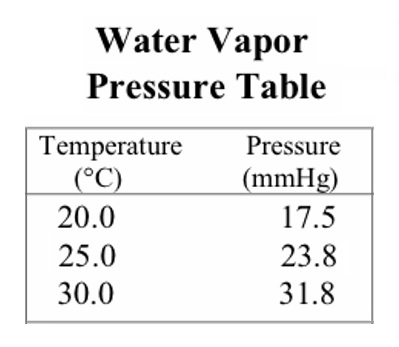

1) Calculate the root mean square velocity of oxygen gas molecules at 25°C.
A) 682 m/s
B) 47.9 m/s
C) 482 m/s*
D) 140. m/s
2) What mass of water (in grams) is formed when 11.4 L NH3 (at 274 K and 1.32 atm) is reacted with an excess of O2.
4 NH3(g) + 5 O2(g) → 4 NO(g) + 6 H2O(g)
A) 12.1 g
B) 18.1 g*
C) 0.669 g
D) 1.00 g
3) Determine the volume of O2 (at STP) formed when 66.6 g of KClO3 decomposes according to the following reaction. The molar mass for KClO3 is 122.55 g/mol.
2 KClO3(s) → 2 KCl(s) + 3 O2(g)
A) 44.4 L
B) 8.12 L
C) 18.3 L*
D) 12.2 L
4) To what temperature must a balloon, initially at 29.2°C and 2.00 L, be heated in order to have a volume of 7.00 L?
A) -187°C
B) 102°C
C) 785°C*
D) 1060°C
5) A gas mixture consists of Ar, O2, and CO2, where the mole fraction of Ar is 0.167 and the mole fraction of CO2 is 0.220. If the mixture is at STP in a 2.00 L container, how many moles of O2 are present?
A) 0.0346 mol
B) 0.0149 mol
C) 0.0547 mol*
D) 0.0196 mol
6) What is the volume (in mL) of 1.23g of F2 at 2778 mm Hg and 55.4°C?
A) 9070 mL
B) 0.239 mL
C) 239 mL*
D) 40.3 mL
7) A 1.77 g sample of an unknown halogen occupies 195 mL at 447 K and 2.08 atm. What is the identity of the halogen?
A) F2
B) Cl2
C) Br2*
D) I2
8) What is the density of CO2 gas at STP.
A) 44.01 g/L
B) 4.06 g/L
C) 1.96 g/L*
D) 0.0446 g/L
9) If a sample of 0.417 moles of Ne occupies 3.12 L under certain conditions, what volume (in L) will 0.725 moles occupy under the same conditions?
A) 1.79 L
B) 1.14 L
C) 0.308 L
D) 5.42 L*
10) Under what circumstances is a gas leastlikely to behave like an ideal gas?
A) High temperature and low pressure
B) Low temperature and high pressure*
C) Low temperature and low pressure
D) High temperature and high pressure
11) The rate of effusion of fluorine to an unknown gas is 1.859. What is the other gas?
A) Ar
B) Xe*
C) Kr
D) Ne
12) What volume (in mL) will a sample of F2 gas occupy in a syringe at 3.19 atm, if the F2 has a volume of 28.5 mL at 1.19 atm?
A) 2.00 mL
B) 10.6 mL*
C) 76.4 mL
D) 4.38 mL
13) Magnesium is dissolved in hydrochloric acid producing hydrogen gas. If 2.40 L of gas is collected at 20.0°C and has a total pressure of 741 mm Hg, what mass of hydrogen is produced? A possibly useful table of water vapor pressures is provided below.
Mg(s) + 2 HCl(aq) → MgCl2(aq) + H2(g)

A) 0.0950 g
B) 0.191 g*
C) 0.201 g
D) 0.196 g
14) A large balloon is initially filled to a volume of 21.0 L at 270. K and a pressure of 2070 mm Hg. What volume of gas will the balloon contain at 1.20 atm and 130. K?
A) 19.2 L
B) 22.9 L*
C) 99.0 L
D) 7.52x104 L
15) What pressure (in atm) will 16.1 g of CO2 exert in a 3.1 L container at 66°C?
A) 0.639 atm
B) 3.28 atm*
C) 145 atm
D) 28.1 atm
16) A mixture of 7.01 g of Ne and 7.15 g Ar have a total pressure of 2.58 atm. What is the partial pressure of Ne?
A) 5.01 atm
B) 1.28 atm
C) 0.855 atm
D) 1.70 atm*
17) A 0.568 g sample of an unknown gas occupies 236 mL at 341 K and 1.75 atm. What is the molar mass of the unknown gas?
A) 0.0385 g/mol
B) 67.8 g/mol
C) 38.5 g/mol*
D) 0.0148 g/mol
18) Determine the volume of H2S (at 270. K and 1.01 atm) needed to produce 48.2 g of S. Assume that there is excess SO2 present (molar mass of S is 32.06 g/mol).